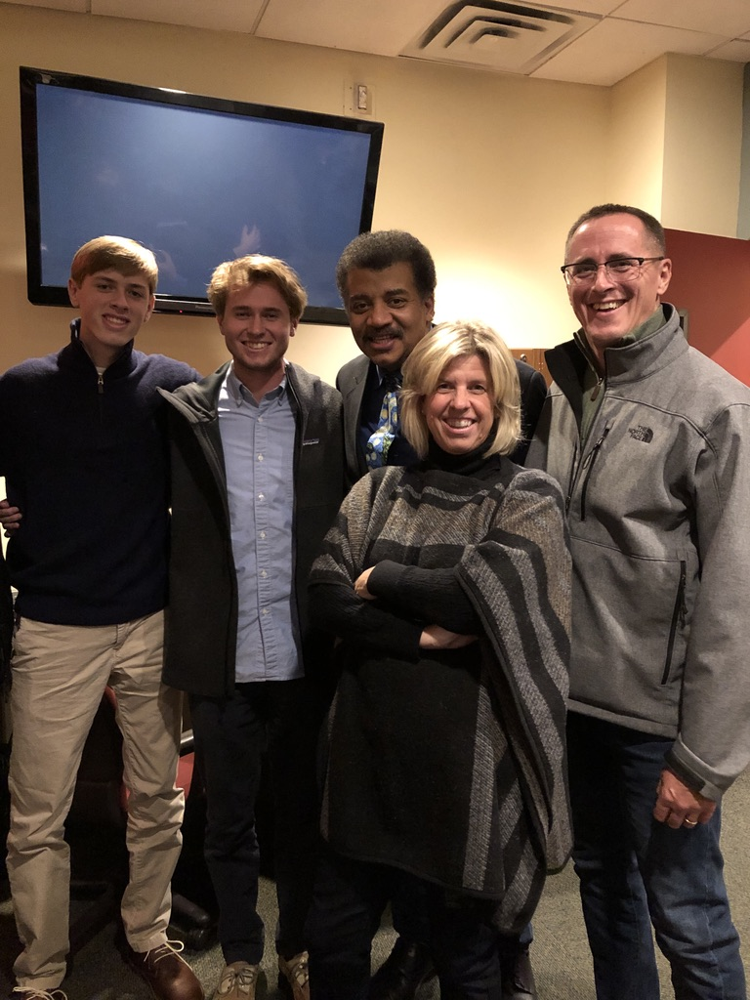

My name is Will Oberholtzer, and I was born in 2002 in New Jersey. Throughout my entire childhood, I was raised in Haddonfield, New Jersey alongside my two brothers, Max and Sam. My oldest brother, Max, is a recent Ursinus graduate (class of 2018) who was also a computer science major!
While growing up, I played many different sports, from baseball, basketball, and others. However, none of those sports stuck out to me as much as tennis. Coming from a family of tennis players, I fell in love with the game from a very young age. After watching my older brothers compete in weekend tournaments and contributing to a very successful high school team, I was eager to follow in their path and develop my skills. By the time I arrived to Haddonfield Memorial High School, I assumed the first singles role as a freshman, and I would proceed to maintain that spot for the rest of my time. After a successful high school career, I sought to continue my tennis career, and I once again followed my family ties by committing to Ursinus College, where Max would have a remarkable career for the Bears. Now, I am a member of the team!
As one who has grown with the rise of technology, I have grown to take an interest in this untapped field. After seeing my brother Max  enjoy programming at Ursinus, I explored my options in high school, and I found that my high school provided an AP course. I proceeded to take the course, and I thoroughly enjoyed the problem-solving and critical thinking required to succeed as a programmer. This is where I started to learn Java, and I continued towards proffiency in the language in my early computer science courses at Ursinus. At college, I have been expanding my knowledge of programming languagues, as I have been working with Python and C++ while here. Also, I've done work with low-level programming in the form of assembly, specifically MIPS assembly language.
My interest in languagues is not limited to programming. I have been studying Spanish in school since elementary school, and it has always been a subject of great interest to me. I graduated from high school as a member of the Spanish National Honor Society, and decided to continue to pursue the language in college. Unsure whether or not I wanted to minor or major, I eventually (and recently) decided to declare a second major in Spanish.
A copy of my resume can be downloaded Here